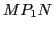

Equations of tangent and normal lines
Full section title: Equations of tangent and normal lines, lengths of subtangent
and subnormal. Rectangular coordinates.
The equation of a straight line passing through the
point  and having the slope
and having the slope  is
is
(this is item 54, §1.1).
Figure 6.4:
The tangent and normal line to a curve.
|
If this line is tangent to the curve AB at the point
, then from §6.1,
Hence at point of contact
the equation of the
tangent line
(containing the segment
)
is
The normal being perpendicular to tangent, its slope is
(item 55 in §1.1).
And since it also passes through the point of contact
, we have for the equation of the
normal line
(containing the segment
 )
)
That portion of the tangent which is between
and the point of contact with the  -axis is called the
length of the tangent ( = ), and its projection on the -axis is called the length of the subtangent6.2
(= ).
Similarly, we have the length of the normal ( = )
and the length of the subnormal (= ).
-axis is called the
length of the tangent ( = ), and its projection on the -axis is called the length of the subtangent6.2
(= ).
Similarly, we have the length of the normal ( = )
and the length of the subnormal (= ).
In the triangle ,
;
therefore6.3
In the triangle ,
;
therefore6.4
The length of tangent ( ) and the length of normal
( ) may then be found directly from Figure 6.4,
each being the hypotenuse of a right triangle having the two
legs known. Thus
Likewise,
The student is advised to get the lengths of the tangent
and of the normal directly from the figure rather than by using these equations.
When the length of subtangent or subnormal at a point on
a curve is determined, the tangent and normal may be easily constructed.
david joyner
2008-08-11